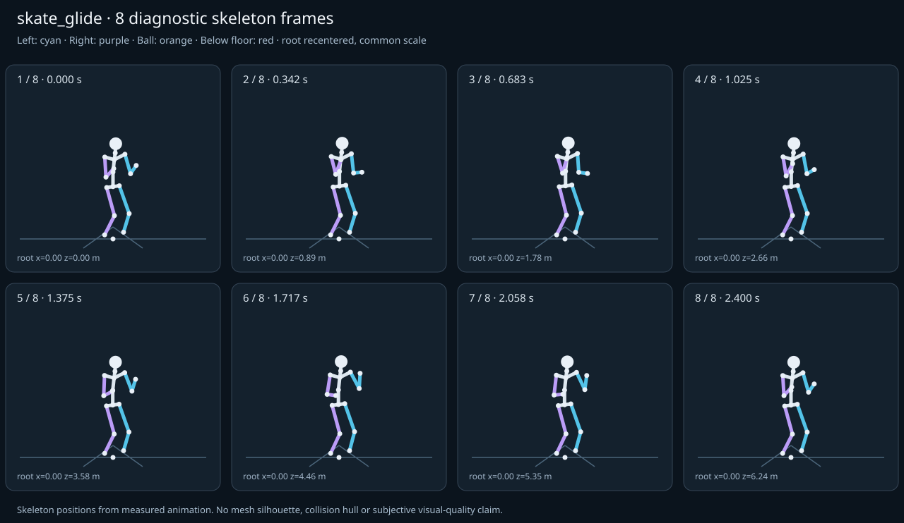

מה הוריד את הציון
- החלקת רגליים: תזוזת סוליה 6.24 מ׳, LeftFoot, בזמן 2.4 ש׳ (אדום)
- מהירות גוף מול צעדים: שורש 2.6 מ׳/ש׳ מול צעד 0 מ׳/ש׳; קצב 0.8333 צעדים/ש׳ (אדום)
- כניסה ויציאה מול המתנה: פער ב־כניסה מול המתנה; יחס חריגה 1.5724 (צהוב)
כיסוי: 100%. לא כל מדד חל על כל קליפ; הסטטוס והראיות מפורטים למטה.
שמונה פריימים
תצוגת שלד אבחונית שנבנתה מהפריימים הנמדדים. צד שמאל בכחול, ימין בסגול, כדור בכתום. מיקום השורש ממורכז לצפייה; מיקומו בעולם כתוב בכל פריים.

המדדים והראיות
| מדד | מצב | ערך | ציון | סף ופרטי מדידה |
|---|---|---|---|---|
| החלקת רגליים | אדום | 3.373 height ratio | 0 | {
"definition": {
"label": "החלקת רגליים",
"unit": "height ratio",
"green": 0.01,
"yellow": 0.035,
"weight": 18,
"description": "Maximum horizontal sole displacement from the first sample of each declared support window, divided by character height. Inferred support is used only when no windows were supplied."
},
"value": 3.372973,
"status": "red",
"score": 0,
"evidence": {
"coordinateSpace": "authored reference world; in-place canonical poses plus declared reference trajectory",
"supportSource": "declared",
"windows": 2,
"samples": 578,
"maxDriftMeters": 6.24,
"p95SpeedMetersPerSecond": 2.6,
"worst": {
"bone": "LeftFoot",
"t": 2.4,
"start": 0,
"end": 2.4,
"driftMeters": 6.24
}
}
} |
| חדירה לרצפה | ירוק | 0 height ratio | 100 | {
"definition": {
"label": "חדירה לרצפה",
"unit": "height ratio",
"green": 0.005,
"yellow": 0.02,
"weight": 15,
"description": "Maximum depth of the supplied sole probe points and all skeletal joint centers below the declared floor plane, divided by height. Sole probes are not a mesh collision audit."
},
"value": 0,
"status": "green",
"score": 100,
"evidence": {
"samples": 5780,
"floorY": 0,
"probeKind": "declared sole probes plus skeletal joint centers (no mesh surfaces)",
"maxDepthMeters": 0,
"worst": {
"t": 0.491667,
"bone": "LeftFoot",
"depthMeters": 0,
"y": 0
}
}
} |
| קפיצות פוזה | ירוק | 0.293 discontinuity ratio | 94 | {
"definition": {
"label": "קפיצות פוזה",
"unit": "discontinuity ratio",
"green": 1,
"yellow": 2.5,
"weight": 18,
"description": "Maximum adjacent 60 Hz-equivalent step: root-relative marker displacement / 0.04 height, root-relative rotation / 15 degrees, or root translation / 0.08 height. A fast continuous action can also exceed this screening threshold."
},
"value": 0.292793,
"status": "green",
"score": 94.14,
"evidence": {
"adjacentPairs": 288,
"observations": 4896,
"maxDegrees60Hz": 1.439783,
"maxMarkerStepHeight60Hz": 0.003577,
"maxRootStepHeight60Hz": 0.023423,
"worst": {
"ratio": 0.29279280900902216,
"t": 2.033333,
"previousTime": 2.025,
"bone": "Root",
"rootStepHeight60Hz": 0.023423
}
}
} |
| חריגות אנטומיות | ירוק | 0 % affected frames | 100 | {
"definition": {
"label": "חריגות אנטומיות",
"unit": "% affected frames",
"green": 0.5,
"yellow": 3,
"weight": 14,
"description": "Percentage of frames with elbow or knee flexion above 165 degrees, neck bend above 80 degrees, or a segment length changing by more than 5%. Optional calibrated hinge checks detect reverse knee flexion above 8 degrees. Conservative marker limits do not diagnose axial joint twist."
},
"value": 0,
"status": "green",
"score": 100,
"evidence": {
"testedFrames": 289,
"affectedFrames": 0,
"checks": 4913,
"maxLimbFlexionDegrees": 117,
"maxRelativeSegmentLengthChange": 0,
"hingeDirectionChecked": true,
"axialTwistChecked": false,
"violations": []
}
} |
| מגע בכדור | לא חל | — height ratio | — | {
"definition": {
"label": "מגע בכדור",
"unit": "height ratio",
"green": 0.015,
"yellow": 0.05,
"weight": 13,
"description": "Maximum absolute distance from the ball surface to the sampled, bone-transformed declared contact point, divided by height. Events are evaluated at their exact declared times by interpolation."
},
"value": null,
"status": "not-applicable",
"score": null,
"reason": "This action explicitly has no visible ball or declared ball contact.",
"evidence": {}
} |
| כניסה ויציאה מול המתנה | צהוב | 1.572 continuity ratio | 71 | {
"definition": {
"label": "כניסה ויציאה מול המתנה",
"unit": "continuity ratio",
"green": 1,
"yellow": 3,
"weight": 10,
"description": "Worst entry/exit mismatch to the best matching idle phase: RMS marker error / 0.04 height, RMS bone rotation / 25 degrees, or RMS endpoint velocity error / 0.75 height per second. Horizontal root translation is aligned; root height and body pose remain measurable."
},
"value": 1.572396,
"status": "yellow",
"score": 71.41,
"evidence": {
"entry": {
"ratio": 1.5723962275831804,
"t": 0,
"idleTime": 2.3,
"markers": 17,
"rmsPositionHeight": 0.032759,
"rmsRotationDegrees": 39.309906,
"rmsVelocityHeightPerSecond": 0.095446,
"velocityEvaluated": true
},
"exit": {
"ratio": 1.5723962275831804,
"t": 2.4,
"idleTime": 2.3,
"markers": 17,
"rmsPositionHeight": 0.032759,
"rmsRotationDegrees": 39.309906,
"rmsVelocityHeightPerSecond": 0.095477,
"velocityEvaluated": true
},
"worstEndpoint": "entry",
"alignment": "horizontal root translation; raw asset poses used when provided"
}
} |
| מהירות גוף מול צעדים | אדום | 1 relative speed error | 25 | {
"definition": {
"label": "מהירות גוף מול צעדים",
"unit": "relative speed error",
"green": 0.2,
"yellow": 0.5,
"weight": 8,
"description": "Relative difference between average root travel speed and the median backward support-foot sweep speed relative to the root. Cadence and implied stride lengths are also reported. In-place clips need an explicit reference travel scenario; stationary actions are not scored as locomotion."
},
"value": 1,
"status": "red",
"score": 25,
"evidence": {
"rootSource": "sampled presented root",
"rootSpeedMetersPerSecond": 2.6,
"observedRootSpeedMetersPerSecond": 2.6,
"referenceRootSpeedMetersPerSecond": 2.6,
"supportSource": "declared",
"backwardSweepSpeedMetersPerSecond": 0,
"cadenceStepsPerSecond": 0.833333,
"impliedStrideMeters": 0,
"rootStrideMeters": 6.24,
"supportSweeps": [
{
"bone": "LeftFoot",
"start": 0,
"end": 2.4,
"duration": 2.4,
"sweepMeters": 0,
"speedMetersPerSecond": 0
},
{
"bone": "RightFoot",
"start": 0,
"end": 2.4,
"duration": 2.4,
"sweepMeters": 0,
"speedMetersPerSecond": 0
}
]
}
} |
| סימטריה | ירוק | 0 relative mismatch | 100 | {
"definition": {
"label": "סימטריה",
"unit": "relative mismatch",
"green": 0.03,
"yellow": 0.1,
"weight": 4,
"description": "Maximum bilateral segment-length mismatch. Looping locomotion additionally compares reflected half-cycle leg markers; explicit pose symmetry compares simultaneous bilateral markers. One-sided actions retain unscored motion diagnostics, so a valid kick or dribble arm is not penalized for intentional asymmetry."
},
"value": 0,
"status": "green",
"score": 100,
"evidence": {
"mode": "gait",
"modeSource": "declared",
"structuralMismatch": 0,
"segments": [
{
"segment": "Arm-ForeArm",
"mismatch": 0
},
{
"segment": "ForeArm-Hand",
"mismatch": 0
},
{
"segment": "UpLeg-Leg",
"mismatch": 0
},
{
"segment": "Leg-Foot",
"mismatch": 0
}
],
"motionRmsHeight": 0,
"worstMotion": {
"t": 1.783333,
"errorHeight": 0
},
"bilateralPoseRmsHeightUnscored": 0.058579,
"note": "Motion is mirrored in a pelvis-centred body basis."
}
} |